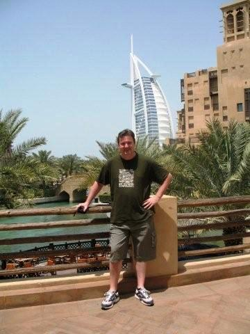

I am Jan Ewest from New South Wales, a student at RMIT University and a team member of the RMIT-IT-Enthusiasts. My student number is s3694468. I'm originally from South Africa where I was raised, schooled and studied. My heritage is South African and German and I speak English, Afrikaans and German languages. After high school I studied Electrical Engineering at Nelson Mandela Metropolitan University. I took an opportunity through my work to go live and work in Germany for 5 years, now I live in Australia. I am interested in administrating computer networks, configuring computer hardware, implementing virtual machine platforms and would like to work as a network engineer in the future. My work experience to date is in industrial automation, which involves programming of Programmable Logic Controllers (PLCs) and configuring industrial IT networks. In my free time I like to travel, hike, camp and sail. My favourite place for sailing and snorkelling is around the Whitsunday Islands.
